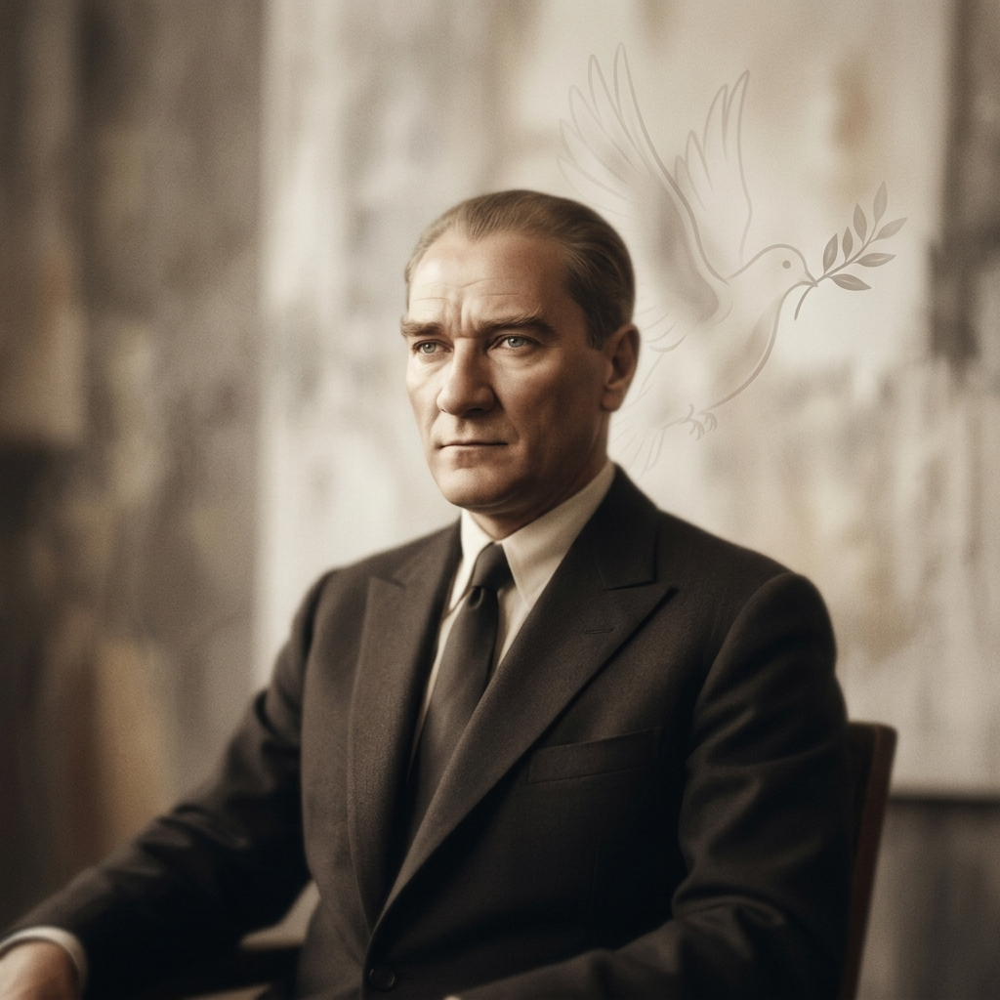
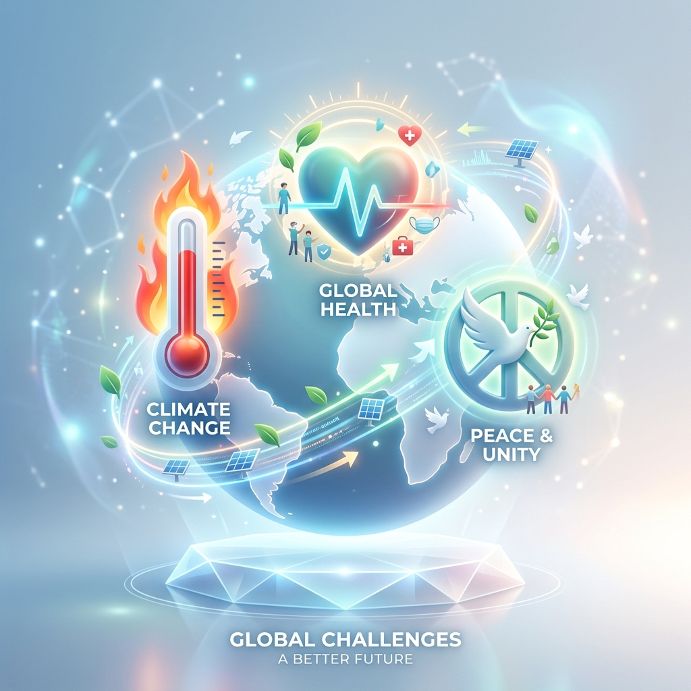

Barışçılık
“Yurtta sulh, cihanda sulh.”
Türkiye, sorunları savaş yerine barış ve diplomasi ile çözmeyi hedefler.
7. Sınıf Sosyal Bilgiler
Dikkat Çekelim
Sence bu iddia doğru mu? Salgın hastalık, iklim değişikliği ya da ekonomik kriz gibi küresel sorunlarda bir ülke tek başına yeterli olabilir mi?
2. Bölüm
Kartlara tıklayınca anlamlar açılır.
3. Bölüm

“Yurtta sulh, cihanda sulh.”
Türkiye, sorunları savaş yerine barış ve diplomasi ile çözmeyi hedefler.
“Bağımsızlık benim karakterimdir.”
Dış politikada başka devletlerin etkisi altında kalmadan karar vermek önemlidir.
“Büyük hayaller peşinde koşup yapamayacağımız şeyleri yapar görünmeyelim.”
Kararlar, duygulara değil ülkenin gerçek şartlarına ve çıkarlarına göre alınmalıdır.
“İnsan mensup olduğu milletin varlığını ve mutluluğunu düşündüğü kadar bütün dünya milletlerinin huzurunu da düşünmelidir.”
Ülkeler arası ilişkilerde saygı, denge ve karşılıklı yarar gözetilir.
4. Bölüm
Kartlara tıkla; açılan pencerede kuruluş yılı, merkezi, üye sayısı, görevleri ve Türkiye ile ilişkisi gelsin.
Kuruluş Haritası
Kuruluşların merkez şehirlerini yaklaşık konumlarıyla incele.
5. Bölüm
Bulmaca son düzenine göre hazırlandı. İpucuna bastığında kavram otomatik yerleşir.
6. Bölüm
Soldan bir kart, sonra sağdan doğru eşini seç.
Hazırsan ilk çifti seç.
7. Bölüm
Her soruda doğru seçeneğe tıkla.
1. Türkiye ekonomik, kültürel ve siyasi alanlarda uluslararası kuruluşlara üyedir.
2. Ön yargılar insanları birbirine daha çok yaklaştırır.
3. Küresel sorunlar yalnızca tek bir ülkeyi ilgilendirir.
4. KEİ, ekonomik iş birliğini geliştirmeyi amaçlayan kuruluşlardan biridir.
5. Salgın hastalıklar küresel sorun örnekleri arasındadır.
8. Bölüm
Tüm sorular aynı anda görünür. Cevapladıkça puan artar.

Türkiye neden uluslararası kuruluşlara katılır? Çünkü barış, güvenlik, sağlık, ekonomi ve kültür gibi alanlarda başka ülkelerle iş birliği yapmak tek başına hareket etmekten daha etkilidir.
Dış politikanın temel ilkeleri nelerdir? Barışçılık, tam bağımsızlık, gerçekçilik ve karşılıklılık Türkiye'nin dış politika anlayışını yönlendirir.
Küresel sorunlar neden iş birliği gerektirir? Salgın, iklim değişikliği, savaş, göç ve ekonomik kriz gibi sorunlar sınır aşar; bu yüzden çözümleri de ortak hareket etmeyi gerektirir.